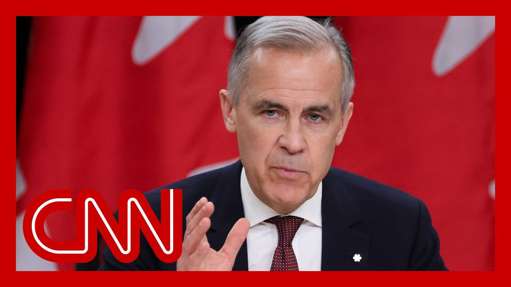

来B站一起耍【Global每日英语简报】
【加拿大总理卡尼谈及与特朗普的通话】
Summary: Canadian PM Carney discussed a constructive call with President Trump, agreeing to meet in Washington to address trade pressures and broader economic-security relations, while emphasizing Canada's commitment to securing the best deal and strengthening global partnerships.
摘要： 加拿大总理卡尼谈及与特朗普总统的建设性通话，双方同意在华盛顿会晤，讨论贸易压力和更广泛的经济安全关系，同时强调加拿大致力于达成最佳协议并加强全球伙伴关系。

⏱️ Estimated Reading Time: 8 min
On Tuesday, I had a very constructive call with President Trump, and we agreed to meet next Tuesday in Washington.
周二，我与特朗普总统进行了非常建设性的通话，并同意下周二在华盛顿会面。
Our focus will be on both immediate trade pressures and the broader future economic and security relationship between our two sovereign nations.
我们的重点将放在当前的贸易压力以及两国未来更广泛的经济和安全关系上。
My government will fight to get the best deal for Canada.
我的政府将努力为加拿大争取最好的协议。
We will take all the time necessary, but not more in order to do so.
我们将花费必要的时间，但不会更多。
In parallel, we will strengthen our relationships with reliable trading partners and allies.
与此同时，我们将加强与可靠贸易伙伴和盟友的关系。
Canada has what the world needs, and we uphold the values the world respects.
加拿大拥有世界所需的东西，并坚持世界尊重的价值观。
What specifically do you want to get out of your first in-person meeting with President Trump?
你希望从与特朗普总统的首次面对面会晤中获得什么具体成果？
And will your fully be focused on trying to get the tariffs lifted?
你是否会全力专注于取消关税？
Thank you for the question for the first meeting.
感谢你关于首次会晤的提问。
As I mentioned in my remarks, and, the president and I discussed when we had our constructive call, there are two sets of issues.
正如我在讲话中提到的，总统与我在建设性通话中讨论了两类问题。
There are the immediate tariffs, both sectoral and, so-called reciprocal and fentanyl tariffs.
一类是当前的关税，包括行业关税、所谓的互惠关税和芬太尼关税。
And then there is the broader relationship.
另一类是更广泛的关系。
So addressing both sets of issues, we'll see how that progress goes.
因此，解决这两类问题后，我们将观察进展如何。
It's important to get engaged, immediately.
立即参与非常重要。
Which was has always been my intention has always been his intention.
这一直是我的意图，也一直是他的意图。
And I'm pleased to have the opportunity for quite a comprehensive set of meetings that will take place on Tuesday.
我很高兴有机会在周二进行一系列全面的会议。
How do you avoid an Oval Office ambush like we saw happen to President Zelensky?
你如何避免像泽连斯基总统那样在椭圆形办公室遭遇伏击？
Look, I go there with, with the expectation of constructive, difficult but constructive discussions.
我带着对建设性但艰难讨论的期望前往。
That's the spirit, of, of the conversations that the president and I had.
这是总统与我谈话的精神。
You know, you go to these meetings well prepared, understanding the objectives of, your counterpart, and, always acting in the best interest of Canada.
你知道，参加这些会议前要做好准备，了解对方的目标，并始终以加拿大的最佳利益行事。
And we'll go from there in your second call with the president.
我们将在你与总统的第二次通话中继续推进。
Did Mr. Trump outright say or insinuate at any point that Canada should become the 51st team?
特朗普先生是否直接或暗示过加拿大应成为第51个州？
He did not.
他没有。
All right.
好的。
We've heard Mr. Trump on April 23rd and his surrogates, throughout the final days of the campaign, reiterate the idea that they believe Canada should become the 51st state on the campaign trail.
我们听到特朗普先生及其代理人在4月23日和竞选最后几天重申他们认为加拿大应成为第51个州的想法。
You said on multiple occasions that respect for Canada would be one of the key things in terms of having a meeting with him.
你多次表示，尊重加拿大是与他会晤的关键之一。
Do you think over the past few days we have seen respect for Canada from the Trump administration?
你认为过去几天特朗普政府表现出对加拿大的尊重了吗？
Look, I would, I it's always important to distinguish one from reality, the volunteer reality.
我认为区分愿望与现实非常重要。
Right.
是的。
What someone wants and what is reality and what the what the Canadian people clearly have stated, virtually without exception, is this will never, ever happen.
某些人的愿望与现实的差距，以及加拿大人民几乎一致明确表示这永远不会发生。
And if, any of the leaders of the party and their representatives would attest to that, I think the votes attest to it.
如果任何政党领袖及其代表能证明这一点，我认为投票结果也能证明。
I think the public dialog attests to it as well.
我认为公众对话也能证明。
And, we are you know, we're meeting as, as heads of our government, to discuss that partnership.
我们作为政府首脑会晤讨论这一伙伴关系。
No, I'm not pretending those discussions will be easier.
不，我不会假装这些讨论会更容易。
They won't proceed in a straight line.
它们不会一帆风顺。
There'll be zigzags, ups and downs.
会有曲折起伏。
But as I said in my remarks, I will.
但正如我所说，我会。
I will fight for the best deal, for Canada, and only accept the best deal for Canada and take as much time that's necessary to my colleagues.
我将为加拿大争取最好的协议，只接受对加拿大最有利的协议，并花费必要的时间。
Point, the White House's public position has continued to be that Canada should be the 51st state.
重点是，白宫的公开立场一直是加拿大应成为第51个州。
You yourself have said that that Donald Trump is trying to break Canada.
你自己曾说过特朗普试图分裂加拿大。
Considering all that, how can you expect good faith negotiations when you travel to Washington next week?
考虑到这些，你如何期待下周前往华盛顿时能进行诚信谈判？
Look, I think the, first, I've had the direct conversation with him, on whatever day it was, Tuesday, I guess it was a couple of days ago.
首先，我与他在几天前的周二进行了直接对话。
And we agreed to have those, negotiations very clear discussion between us, as I said, very constructive.
我们同意进行非常明确的讨论，正如我所说，非常建设性。
And, I would say the time allocated to our meeting in the seniority of the I mean, he's the president.
而且，我认为会议时间的安排和参与者的级别（他是总统）表明了讨论的严肃性。
So that's a senior as you get.
这是最高级别的会晤。
But, the other, members of his administration who will be assisting, at those meetings suggests the seriousness of, the discussions.
但他的政府其他成员参与会议也表明了讨论的严肃性。
Again, we are not.
再次强调，我们并不。
Do not expect white smoke.
不期待会立即达成协议。
Out of that meeting.
从这次会议中。
There will be white smoke, probably later somewhere else, in the world, this month.
本月晚些时候世界其他地方可能会有协议达成。
But do not expect that.
但不要期待这次会议会有。
But, so that's the first thing is just the level of, you know, the direct dialog, the discussion, the level of, people there.
但首先，这是直接对话和讨论的级别以及参与者的级别。
The second point, I'll make it quickly.
第二点，我会简短说明。
And thank you for restricting the question so others can get in.
感谢你限制问题以便其他人提问。
Is that, he respects as, as as others who are good negotiators, and he's one of the best negotiators.
他像其他优秀谈判者一样尊重实力，而他本人就是最优秀的谈判者之一。
They respect strength.
他们尊重实力。
That's why we're building Canada strong.
这就是我们建设强大加拿大的原因。
There's lots of reasons to build Canada strong.
建设强大加拿大有很多理由。
But the point is, and I will make this point repeatedly, we have more than enough to do here at home.
但关键是，我会反复强调，我们在国内有足够多的事情要做。
That point about we can give ourselves more than the Americans can take away is absolutely right.
我们能够为自己创造的比美国人能夺走的更多，这一点绝对正确。
We can we can have a bigger boost to our economy, to incomes, to jobs, by focusing on building one Canadian economy, by building these nation, building, projects, by focusing on getting productivity up, by reducing government waste, by driving investment in this country.
通过建设统一的加拿大经济、国家建设项目、提高生产力、减少政府浪费和推动国内投资，我们可以更大程度地提振经济、收入和就业。
And so that is a good in and of itself.
这本身就是好事。
We're going to focus on that.
我们将专注于这些。
Well, we have these negotiations with the Americans.
同时，我们与美国人进行这些谈判。
And if the negotiation with the Americans take longer, so be it.
如果与美国的谈判需要更长时间，那就顺其自然。
We've got more than enough to do here.
我们在国内有足够多的事情要做。